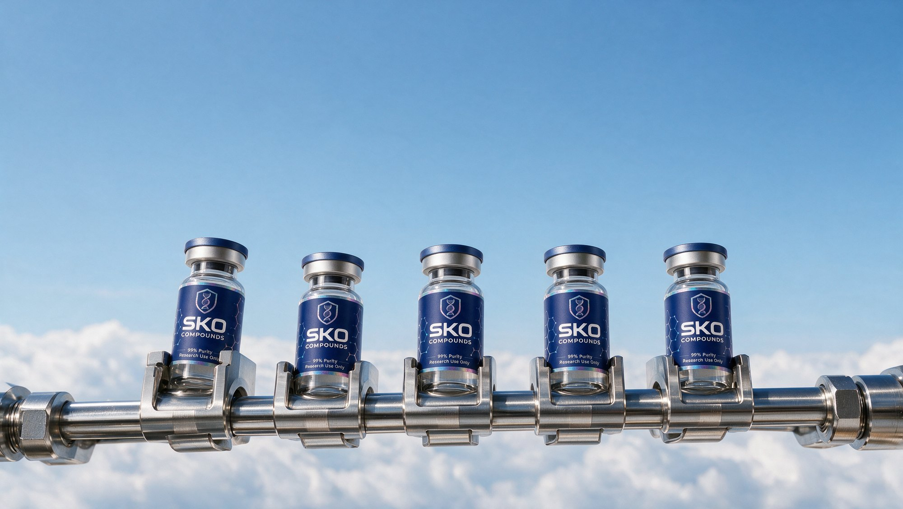
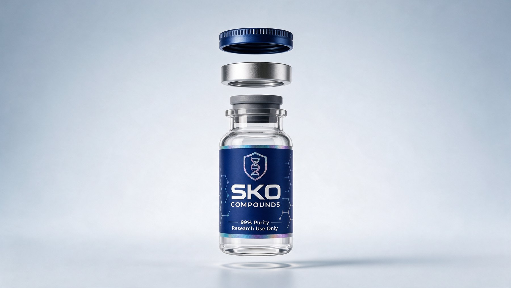
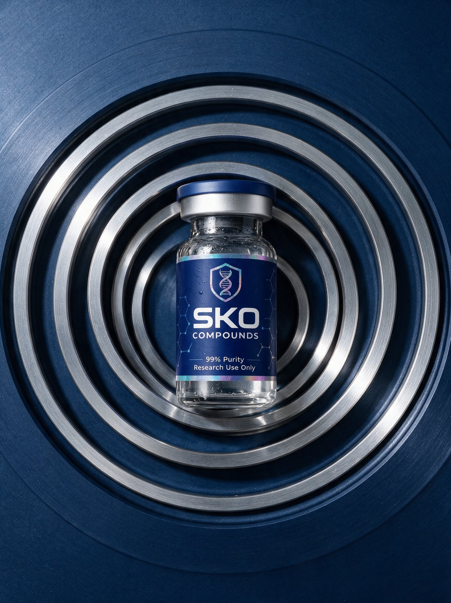
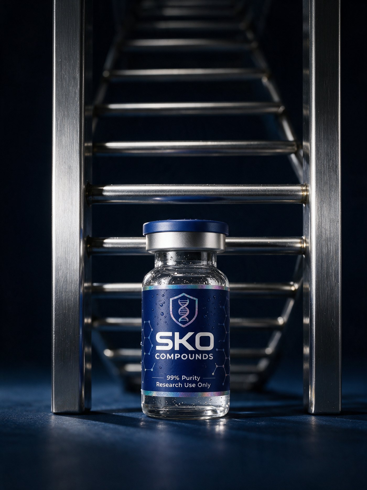
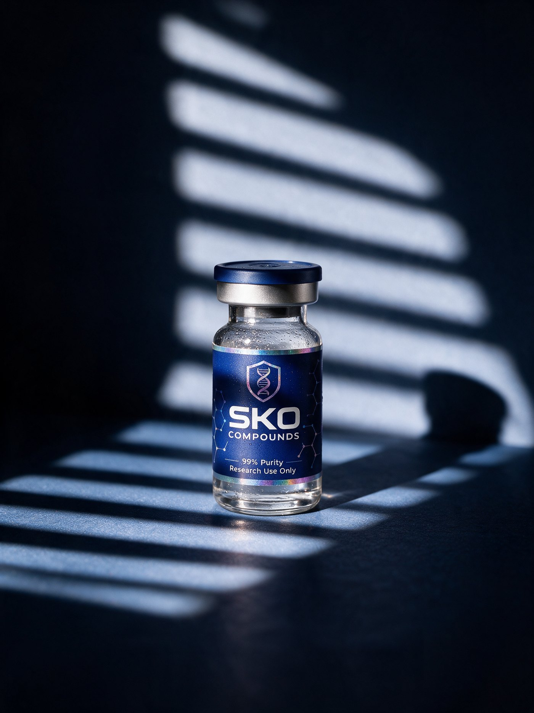
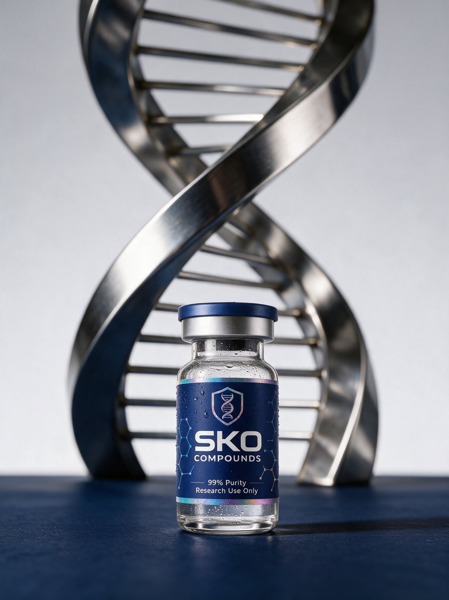
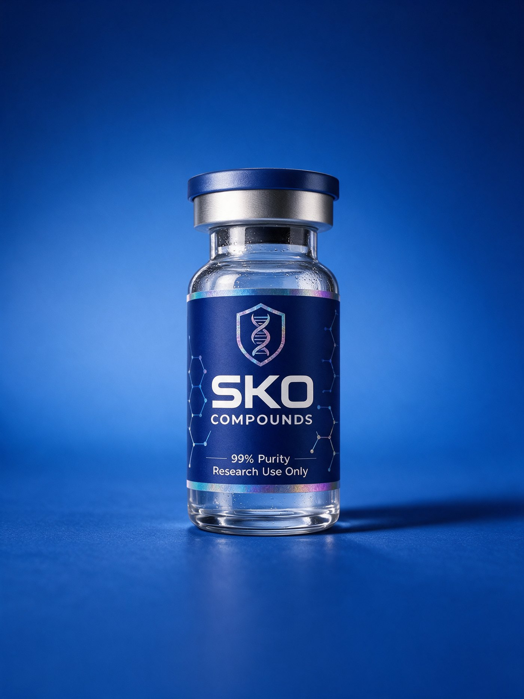
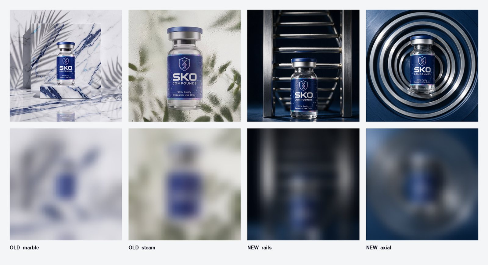

Engineered like an instrument.
Finished like a luxury.
Primary #26379B
Type Roobert / Inter
Research use only

Industrial potency and a rich life were fighting each other because they were being treated as alternatives. They are not. The engineered object is the subject; the lavish world is what it sits in. The same hardware in a dark room reads clinical — in open air it reads expensive.

The previous spec was sampled from AI renders of the vial, which run dark. Read off the physical label, the brand is a true royal blue.
SKO Blue
#26379B · primary
Deep
#1B2A7A · ground
Halo
#9DBFD9 · the sky
Paper
#F3F5F8 · surface
Foil
a material, not a colour
Open: #26379B is read off photographs, not measured. The label artwork or the printer’s spec overrides it. The physical label also runs holo around the full perimeter — the written spec currently says two bands.
Nothing crosses the vial, no shadow lands on the label, the bottle is never warped. The structure lives behind it or beside it.





Eight existing assets, blurred to roughly what a thumb-scrolling feed delivers. Five collapse into the same pale shape — indistinguishable from each other and from any competitor shooting a dark-labelled vial. The vial is a category cue, not a brand cue.

Recognition is what compounds into lower CPA. Navy must own the frame and the foil seal must be visible at frame scale — not a 6px detail on a small bottle.